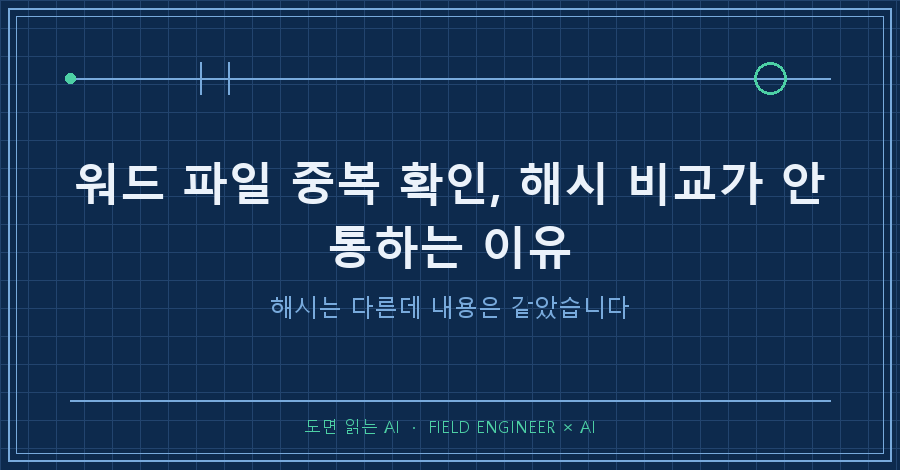
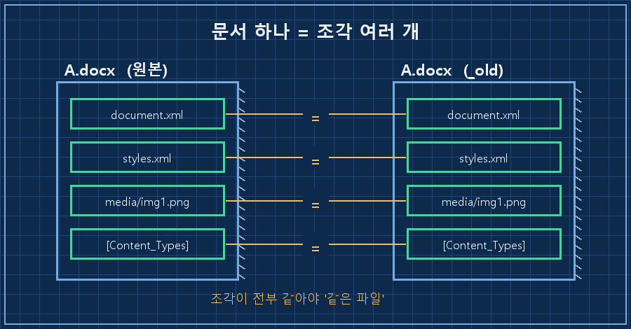
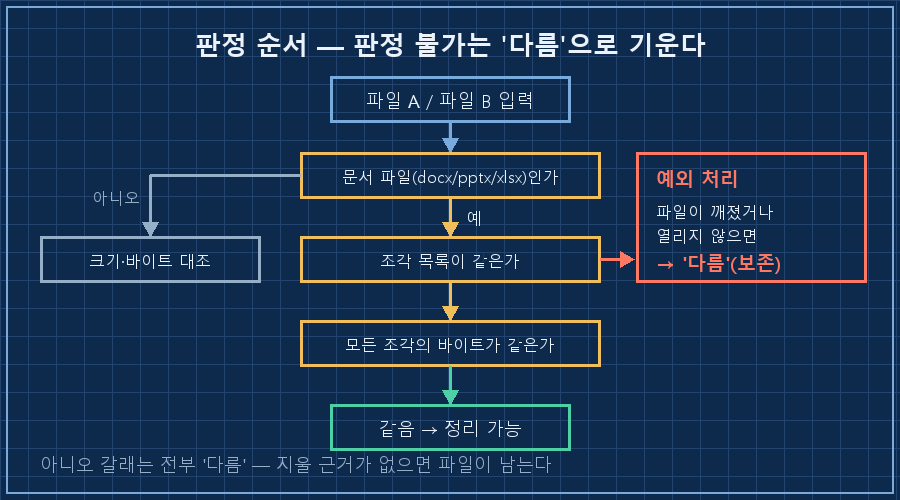
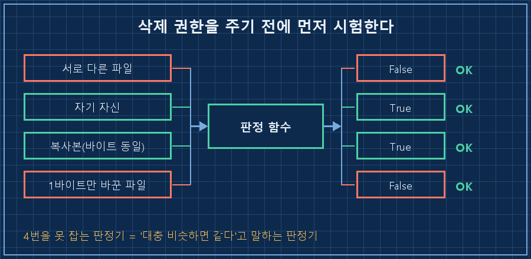

폴더 정리를 AI한테 맡겼다가 삭제 직전에 손을 멈춘 날이 있습니다.
같은 이름 파일 일곱 쌍을 놓고 "이건 중복이니 지워도 됩니다"라는 답을 받았는데, 판정 근거가 파일 해시더라고요.
워드 파일 중복 확인을 해시 비교로 하면 안 됩니다. docx·pptx·xlsx는 속이 zip 압축 파일이라, 내용이 한 글자도 안 바뀌어도 다시 저장하는 순간 안에 박히는 시각 정보 때문에 바이트가 달라져요. 그래서 해시가 다르다고 내용이 다른 게 아니고, 반대로 크기가 같다고 같은 것도 아닙니다. 확실하게 가르려면 압축을 풀어 안에 든 조각을 하나씩 대조해야 해요. 파이썬 표준 라이브러리로 15줄이면 됩니다.
2026년 9월 기준, 윈도우에 파이썬 3으로 돌린 코드입니다. 추가 설치 없이 zipfile 모듈만 써요.
도면이랑 설비 문서를 십오 년 다뤘습니다. 이 바닥에서 제일 크게 혼나는 사고가 뭐냐면 고장 낸 게 아니라 파일을 잘못 지운 것이에요. 그래서 중복 정리는 늘 맨 뒤로 미뤘고, 미룬 만큼 폴더가 지저분해졌죠..
1. 해시가 왜 안 통하나요
제 정리 규칙은 단순합니다. 구버전은 _old 폴더로 내리고 최신본만 위에 둔다. 그런데 _old 안에 이미 같은 이름 파일이 있으면 자동으로 못 옮겨요. 덮어쓰기를 막아뒀거든요. 그렇게 일곱 쌍이 몇 달째 밀려 있었습니다..
여기서 AI가 낸 첫 판정이 해시 비교였어요. 그런데 문서 파일은 이게 두 방향으로 다 틀립니다.
| 판정 방법 | 이런 경우에 틀림 | 결과 |
|---|---|---|
| 해시(md5) 비교 | 내용은 같은데 다시 저장만 한 파일 | 멀쩡한 중복을 못 찾음 |
| 파일 크기 비교 | 글자 수는 같고 내용이 바뀐 파일 | 다른 파일을 같다고 판정 |
아래쪽 칸이 무서운 쪽입니다. 위쪽은 정리를 못 할 뿐이지만, 아래쪽은 원본을 지웁니다.
이유는 파일 속을 열어보면 납득이 돼요. docx는 문서 한 개가 아니라 여러 조각을 담은 압축 폴더입니다. 확장자를 zip으로 바꿔 풀어보면 본문, 스타일, 이미지가 따로 들어 있어요. 그리고 압축 파일은 조각마다 언제 넣었는지를 같이 적어둡니다. 내용이 같아도 저장 시각이 다르면 그 부분이 달라지고, 해시는 파일 전체를 재료로 만드니까 값이 바뀌죠.
제 코드에도 이 문장이 주석으로 박혀 있습니다.
docx/pptx/xlsx는 OOXML(zip)이라 내용이 같아도 재생성하면
타임스탬프 때문에 바이트·해시가 달라진다.
반대로 크기가 같다고 같은 것도 아니다.
2. 압축을 풀어 조각끼리 맞춰봤습니다
그래서 워드 파일 중복 확인용 판정 함수를 새로 짰어요. 순서는 세 단계입니다.
1단계. 문서 파일이 아니면 크기부터 봅니다. 크기가 다르면 볼 것도 없이 다른 파일이에요. 다만 이 지름길은 docx·pptx·xlsx에는 쓰면 안 됩니다. 같은 내용도 압축 결과 크기가 달라질 수 있거든요.
2단계. 문서 파일이면 압축을 풀어 조각 이름부터 맞춥니다. 조각 목록이 다르면 그 자리에서 다른 파일로 끝냅니다.
3단계. 목록이 같으면 조각을 하나씩 바이트로 대조합니다. 하나라도 어긋나면 다른 파일이에요.
if a.suffix.lower() in (".docx", ".pptx", ".xlsx"):
import zipfile
with zipfile.ZipFile(a) as za, zipfile.ZipFile(b) as zb:
na, nb = set(za.namelist()), set(zb.namelist())
if na != nb:
return False
return all(za.read(n) == zb.read(n) for n in na)
return a.read_bytes() == b.read_bytes()한 줄을 더 붙였는데, 저는 이게 이 함수에서 제일 중요하다고 봐요.
except Exception:
return False # 판정 불가 시 '다름'으로 보아 보존 쪽으로 안전하게 기운다파일이 깨졌거나 열리지 않으면 판정을 포기하고 다름으로 답합니다. 그러면 최악의 경우에도 파일이 남아요. 판정 못 하겠으면 지우지 않는다, 이 한 줄만 박아둬도 밤에 잘 자게 됩니다.
확인 방법(성공 판정). 내용이 같은 걸 아는 파일 한 쌍을 넣어 True, 다른 걸 아는 한 쌍을 넣어 False가 나오면 통과입니다. 저는 여기에 두 가지를 더 붙였는데, 그건 4번에 적을게요.

3. 판정이 갈리면 처리도 갈라야 합니다
일곱 쌍을 돌린 결과는 이렇게 나왔어요.
중복 후보 7쌍
├ 내용 동일 5쌍 (내부 조각 17~52개가 전부 일치)
└ 내용 상이 2쌍
├ 발표자료 한 건 — 슬라이드 조각 10개가 서로 다름
└ 텍스트 파일 한 건 — 482바이트 vs 3977바이트동일한 다섯 쌍은 위쪽 사본을 정리했는데, 삭제 직전에 같은 판정을 한 번 더 통과시켰습니다. 제 규칙엔 데이터를 함부로 지우지 않는다는 조항이 있어서, 근거가 나왔어도 사람 확인 절차는 건너뛰지 않았어요.
문제는 남은 두 쌍이었어요. 둘 다 보존해야 하니 고칠 수가 없는 항목입니다. 그런데 점검 도구는 이걸 계속 "정리 안 된 파일"로 잡아 매일 경고를 띄웠어요. 같은 '중복'이어도 성격이 완전히 다른데 말이죠.
| 판정 | 실제 성격 | 처리 |
|---|---|---|
| 내용 동일 | 지금 정리 가능 | 경고로 띄움 |
| 내용 상이 | 보존 확정, 손댈 게 없음 | 기록만, 감점 없음 |
| 판정 불가 | 확인 전까지 보류 | 보존 |
손댈 수 없는 항목을 경고로 두면 그 경고는 영원히 안 없어지고, 쌓이면 사람은 경고를 통째로 안 봅니다. 그래서 보존 확정분은 감점 없는 기록으로만 남겼어요. 여러분 알림함에도 몇 달째 그대로인 항목이 있다면, 그게 진짜 할 일인지 애초에 할 수 없는 일인지부터 갈라보시면 좋겠습니다.
이건 저도 헷갈렸던 것들
Q. 그냥 워드에서 열어보고 눈으로 비교하면 안 되나요?
일곱 쌍이면 됩니다. 저도 처음엔 그러려고 했어요. 그런데 슬라이드 수십 장짜리 발표자료 두 개를 눈으로 대조해보면 압니다.. 사람 눈은 "글자는 같은데 표 안 숫자 하나가 다른" 경우를 못 잡아요.
Q. 파일 비교 프로그램을 쓰면 되지 않나요?
비교 도구 대부분은 바이트나 해시로 먼저 거릅니다. 그러면 1번에서 적은 함정을 그대로 밟아요. 문서 파일을 zip으로 인식해 안까지 들어가 주는 도구가 아니면 결과가 같습니다. 저는 워드 파일 중복 확인을 매일 도는 점검에 붙일 거라 함수로 만드는 쪽을 택했어요.
Q. 조각 이름만 비교해도 충분하지 않나요?
그건 1차 거름망일 뿐이에요. 문서 구조가 같으면 조각 목록은 당연히 같습니다. 이름이 같은 조각의 속이 다른 게 흔한 경우고, 이름 비교에서 멈추면 내용이 바뀐 파일을 같다고 판정해요.
4. 지우기 전에, 판정기부터 시험했어요
여기가 이 작업에서 제일 마음에 드는 부분입니다.
판정 함수가 "같다"고 하면 저는 파일을 지웁니다. 그 함수가 대충 만들어져 있으면 지우는 근거가 통째로 흔들리죠. 그래서 지우기 전에 함수를 시험대에 올렸어요. 네 가지를 넣어봤습니다.
1) 서로 다른 파일 → False 여야 함 OK
2) 자기 자신과 비교 → True 여야 함 OK
3) 복사본(바이트 동일) → True 여야 함 OK
4) 1바이트만 바꾼 파일 → False 여야 함 OK3번과 4번이 핵심이에요. 3번은 진짜 같은 걸 같다고 하는지, 4번은 딱 1바이트 다른 것도 잡아내는지를 봅니다. 4번을 통과 못 하는 판정기는 "대충 비슷하면 같다"고 말하는 판정기고, 그런 판정기에 삭제 권한을 주면 안 되잖아요. 네 줄에 다 OK가 뜨고 나서야 삭제로 넘어갔습니다!
이 시험은 파일로 남겨뒀어요. 나중에 판정 조건을 느슨하게 바꾸면 4번이 먼저 빨간불을 켭니다.

정리하면
- 문서 파일 중복은 해시로 판정하면 안 된다 — 같은 내용도 해시가 달라진다
- 압축을 풀어 조각 목록 → 조각 내용 순으로 대조한다
- 판정이 안 되면 무조건 보존 쪽으로 기운다
- 고칠 수 없는 항목은 경고에서 빼고 기록으로만 남긴다
- 삭제를 자동화하기 전에 판정기부터 시험한다
AI한테 폴더 정리를 시키면 대개 잘합니다. 다만 삭제가 걸린 판정만은 근거를 열어보는 게 좋아요. 이번에도 AI가 게을렀던 게 아니라 방법이 틀렸던 거고, 제가 "해시로 비교한 거냐"고 물어본 게 전부였습니다.
다음 편에서는 이렇게 정리한 파일을 이름 규칙에 맞춰 자동으로 옮기는 쪽을 적어볼게요. 탐지만 하고 옮겨줄 도구가 없어서 몇 달을 방치했던 그 항목입니다.
지울 뻔한 기록까지 makefield.ai에 그대로 남겨두는 편입니다.
태그: #워드파일중복확인 #docx파일비교 #파일중복삭제 #같은파일인데용량이다를때 #파일정리자동화 #파이썬파일비교 #zipfile #파일해시비교 #폴더정리 #AI에게일시키기 #AI자동화구축 #AI결과물검수 #무인자동화 #개인AI에이전트 #도면읽는AI